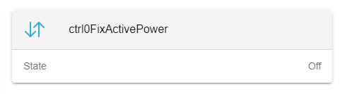
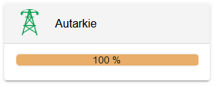
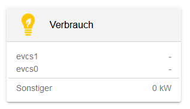

Creating a FlatWidget
The FlatWidget is mandatory for a Modal-Widget. Its purpose is to show only the most important or general data. It also acts as a button, that can open the ModalWidget.
<ng-container *ngIf="isInitialized">
<oe-flat-widget (click)="presentModal()" [icon]="{name:'swap-vertical-outline'}" [title]="component.alias">
<oe-flat-widget-line [name]="'General.state' | translate" [value]="propertyMode"
[converter]="CONVERT_MANUAL_ON_OFF">
</oe-flat-widget-line>
<ng-container *ngIf="propertyMode === 'MANUAL_ON'">
<oe-flat-widget-line [name]="chargeDischargePower.name" [value]="chargeDischargePower.value"
[converter]="CONVERT_WATT_TO_KILOWATT">
</oe-flat-widget-line>
</ng-container>
</oe-flat-widget>
</ng-container>If we take another look at the example of FixActivePowers FlatWidget you can see that everything is wrapped up in a ng-container
One step further there is a oe-flat-widget@Input() properties. These properties can be passed with the Widget. If you are not familiar with @Input() and @Output(), window="_blank", take a look here.
Inside this @Component-tag, multiple other Components can be used.
or |

Shows a row with a @Input() name left and @Input() value on the right. This value can also be converted with @Input() converter. |
|

|
|

Shows a horizontal line, that is used to divide children of AbstractFlatWidgetLine. |
Passing data can be done two ways:
-
@Input() channelAddress: provide channel, which will be subscribed in AbstractFlatWidgetLine.
-
@Input() value: subscribe in the ts-file and pass the subscribed value.
Creating a modal
Creating a modal-widget is pretty similar to creating a flat-widget.
The model should act as the detailed view of a flat-widget and can also fit the purpose of user interaction.
There are multiple implementations of modals at the creation time of this page, but the one thats considered best practice is the unit-testable version.
Creating a Line
Lets take a look at one example.
public static generateView(
config: EdgeConfig, role: Role, translate: TranslateService)
:OeFormlyView {
// Total
lines.push({
type: 'channel-line',
name: translate.instant('General.TOTAL'),
channel: '_sum/ConsumptionActivePower',
converter: Converter.ONLY_POSITIVE_POWER_AND_NEGATIVE_AS_ZERO
});
return {
title: translate.instant('General.grid'),
lines: lines
};
}Predefined fields in OeFormlyField can be used here.
For this line we use the type 'channel-line'. This represents a line, where a channel has to be subscribed. You also need to specify the converter, that uses the data coming from this channel and mutates it. A filter, which has to return a boolean, decides if the line will be shown or not.
| Lines should always present one line of data visualisation. It could be consisting of a identifier and a value or just a value. The value or channel will be shown at the end of the line, the name, if provided, at the start. |
This line will be looking like this: